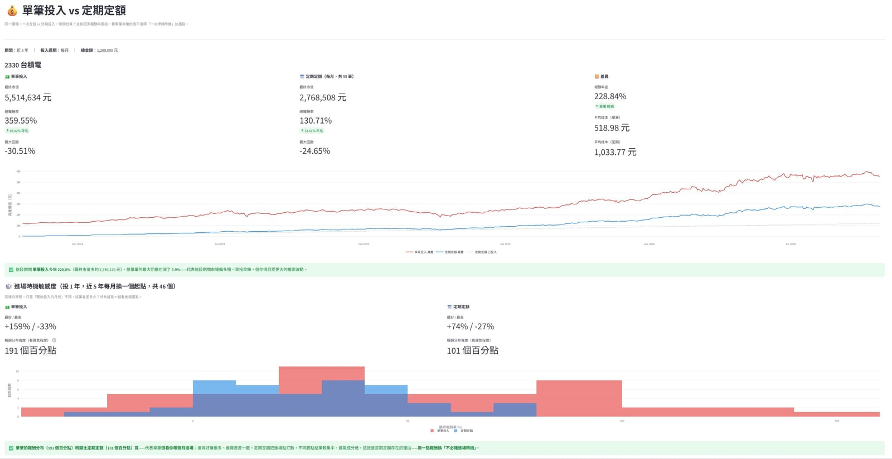

上一篇我拆解了「當沖每天賺 3000 元有多難」，結論是當沖費用吃光薄利、極難穩定獲利。那很多人會接著想：那我不要那麼累、改做中長期，用技術指標抓波段，一個月賺個 6 萬總行吧？
月賺 6 萬＝年賺 72 萬，聽起來比當沖輕鬆。這篇就用回測來回答兩件事：(1) 中長期用技術指標進出，真的比較好賺嗎？(2) 要月賺 6 萬，到底得投入多少本金？
先說結論：可行，但關鍵不在「技術」而在「本金」與「選股」。而且我發現一個反直覺真相——對長期走多的好股票，單純「買進長抱」常常大幅打敗各種技術指標進出。
實測一：KD 進出 vs 買進長抱
先用最經典的 KD 黃金交叉進、死亡交叉出，跟「買進後就不動」對照（近 2 年、年化報酬）：
| 股票 | KD 進出 | 買進長抱 |
|---|---|---|
| 台積電 | 0.7% | 52.2% |
| 聯發科 | 3.6% | 81.5% |
| 台達電 | 4.7% | 100.1% |
| 鴻海 | 1.3% | 10.0% |
| 長榮 | 0.5% | 25.4% |
| 平均 | 2.0% | 50.6% |
KD 進出平均年化 2%，買進長抱 50.6%——長抱贏了 25 倍。 這結果第一次看到時我也很意外。
為什麼「避開下跌」反而輸了？
KD 進出的邏輯是「死叉先跑、避開下跌」，聽起來該更好才對。關鍵在三個現實：
- 指標會延遲：KD 是落後指標。等它死叉確認，股票常已從高點跌一段；等它金叉再進，又已從低點漲一段。一出一進，你砍掉的是趨勢最肥的頭和尾。
- 多頭股票「漲的時間遠多於跌」：好股票大部分時間在漲、偶爾拉回。你為了閃那偶爾的拉回，卻常常在拉回後不敢追、錯過後面更大的漲幅。
- 盤整空轉：橫盤時指標頻繁給假訊號，一直小進小出被成本磨掉。
你想避開的下跌，遠小於你因為進出而錯過的上漲。 這就是核心。
看一個數字就懂：KD 進出的最大回撤只有 -2~4%（確實避開了下跌），但買進長抱要吞 -30~50% 的帳面回檔。問題是——你躲開的是「暫時的帳面虧損」（不賣就會漲回來），錯過的卻是「永久的真實漲幅」。
實測二：移動停利——唯一能逼近長抱的進出法
既然「死叉就跑」太早下車，那改用移動停利（不設固定目標，從持有高點回檔超過 X% 才出）呢？這能讓趨勢繼續跑、真的轉折才出場。實測確實大幅改善：
| 出場方式 | 平均報酬（近2年） |
|---|---|
| KD 死叉出場 | 81% |
| 移動停利（回檔15%才出） | 110% |
| 買進長抱 | 148% |
（註：此處為全額單一部位滾入的試算，數字會比分批投入大，但三者同基準可比。）
移動停利把報酬從 81% 拉到 110%，最接近長抱。 台積電最明顯：KD 死叉出場只有 2.6%，改移動停利變 118.6%，幾乎追平長抱的 131%。
但它仍略輸長抱——因為任何「出場機制」在強多頭裡都贏不過「永不下車」。移動停利真正的價值在空頭：等市場轉空，長抱會大賠，移動停利早就鎖利出場了。多頭測不出它的好，別因此低估它。
實測三：SAR——漂亮的趨勢跟隨，但沒有神奇
我還試了 Parabolic SAR（那個會在股價上下翻面的點點指標，本質是內建移動停利的趨勢跟隨）。結果排名：
買進長抱 > 移動停利 > SAR > KD。
SAR 贏過 KD（趨勢跟隨本質較好），但輸給移動停利——因為 SAR 盤整時會頻繁翻面被洗。它適合波段明顯的股票，不適合緩漲的大趨勢股。
實測四：那「買在哪一天」到底有多重要？單筆 vs 定期定額
前面都在比「怎麼進出」，這段來回答另一個每個人都煩惱過的問題：我這筆錢，是一次全押、還是分批慢慢買？買錯時間點會差多少？
我用台積電做了一個不一樣的實驗：固定持有一年，但把「進場起點」掃過近 5 年的每一個月（和定期定額「每月買一筆」同口徑），看看光是「哪個月開始買」會讓報酬差多少。再拿「單筆一次全押」跟「定期定額（分 12 個月、每月買一筆）」對照。

| 方式 | 報酬最好 | 報酬最差 | 最好 ~ 最差的落差 |
|---|---|---|---|
| 單筆一次全押 | +159% | -33% | 191 個百分點 😱 |
| 定期定額 12 個月 | +74% | -27% | 101 個百分點 |
（台積電 2330、近 5 年、每月一個進場起點、各算持有一年的報酬。）
「分布寬度」怎麼看？ 這個實驗不是只算一個結果，而是把「每個月進場」都算一次，得到一堆報酬。寬度就是在描述這堆結果散得多開——說白了，就是「你的成敗有多靠運氣（進場時機）」。 寬度大＝很看運氣、結果難預測；寬度窄＝不太看運氣、結果穩定可複製。（📌 圖中百分比為四捨五入顯示，落差以原始值計算，故直接相減可能差 1，屬正常現象。）
先看最震撼的一欄：單筆全押，光是「哪個月開始買」就能讓一年報酬相差 191 個百分點。 運氣好買在低點，一年大賺 159%；運氣差買在高點，同樣抱一年卻倒賠 33%。同一檔台積電、同樣抱一年，從大賺到虧損，差別只在你哪個月按下買入鍵。 這就是「進場時點」的威力——比你想的大得多。
那定期定額呢？它把這個落差從 191 砍到 101 個百分點，少了快一半。白話說：定期定額讓你「買貴買便宜」被平均掉，結果不再那麼看運氣——最差也只小賠 27%，不會像單筆那樣踩到 -33% 的地雷。
但天下沒有白吃的午餐：定期定額的報酬上限也被壓低了（最好 +74% vs 單筆 +159%）。原因很單純——在長期往上的多頭裡，你越晚投入的那幾筆，錯過了前段的漲幅。
所以這題的正解不是「哪個比較好」，而是看你在怕什麼：
- 怕買在最高點、抱不住套牢的心理壓力 → 定期定額。它用「壓低報酬上限」換「大幅縮小看錯時點的運氣風險」（落差從 191 降到 101），分布更窄、更睡得著。
- 手上一次有一筆錢、而且相信長期往上 → 單筆的上檔空間更大（資金更早進場），代價是你要承受「剛好買在波段高點、一年倒賠 33%」的風險，得扛得住。
而這整段最重要的一句話是：「買在哪一天」的影響，遠大於你用什麼技術指標進出。 與其研究 KD 要不要搭 MACD，不如先想清楚「這筆錢要一次進還是分批進」——那個決定對你最終報酬的影響，大上一個量級。
最反直覺的發現：加越多條件，常常越差
這是整個探索裡最打破常識的部分。我試著「加條件提高勝率」，例如：
- KD 金叉 ＋ MACD 也翻多才進場
- 再 ＋ 週線 KD 也要偏多（大周期定方向）
- 用 ADX 過濾掉盤整才進
結果幾乎每一種「加條件」都讓整體報酬變差。 原因是同一個：任何「等更多條件確認才進」的過濾，本質都是延後進場——換來更少假訊號，卻也錯過了趨勢最肥的起點。在多頭裡，錯過起點的損失遠大於避開盤整的收益。
簡單的 KD 單獨，反而比「KD＋MACD＋週線＋ADX」一堆條件疊起來更好。複雜不等於更強。
回到正題：月賺 6 萬要投多少本金？
把上面的報酬率換算成本金需求。目標是年賺 72 萬（月均 6 萬）：
| 年化報酬率 | 需要本金 | 說明 |
|---|---|---|
| 2%（KD 進出實測） | 約 3,600 萬 😱 | 技術指標進出報酬太低，本金需求嚇人 |
| 8~10%（務實長期平均） | 約 720~900 萬 | 以大盤歷史合理報酬估算 |
| 50%（近兩年長抱） | 約 140 萬 | 但這是大多頭的倖存者偏差，別當常態 |
重點看懂三件事：
- 用技術指標頻繁進出（年化 2%）來追月賺 6 萬，需要近 3,600 萬本金——幾乎是用報酬率懲罰你的勤勞。
- 用務實的 8~10% 長期年化（別用這兩年大多頭的 50%），需要 700~900 萬本金。這才是比較誠實的數字。
- 那個「140 萬就夠」是用近兩年大多頭的 50% 回推，不可能年年重現，拿它規劃會很危險。
所以「月賺 6 萬」不是做不到，而是——它主要是「本金 × 合理報酬」的結果，不是靠進出技巧變出來的。與其花力氣研究進出訊號把年化從 2% 擠到 3%，不如專注在「累積本金」和「選對能長期成長的標的」。
那中長期到底該怎麼做？
把這些實測拼起來，給一般人的務實結論是：
- 選對「長期會成長」的好股票，比任何進出技巧都重要。 標的對了，長抱就贏大多數花俏操作。
- 技術指標進出的價值不是「賺更多」，是「控制回撤」——它讓你少吞那 30~50% 的帳面大跌，代價是報酬打折。適合「抱不住大跌、會恐慌殺在低點」的人。
- 若要用進出，移動停利 > 固定停利 > 指標死叉——讓趨勢跑、只在真回檔時出。
- 別迷信加條件。多數時候，一個簡單規則＋紀律，勝過一堆過濾條件。
- 長抱最大的門檻不是技術，是心理——要扛得住中途 -30% 的帳面虧損不恐慌賣出。做不到的人，移動停利是折衷。
小結
- 月賺 6 萬可行，但靠的是本金與選股，不是進出技巧：務實 8~10% 年化下約需 700~900 萬本金。
- KD 等指標進出，長期常大幅輸給買進長抱（實測平均年化 2% vs 50%）。
- 「避開下跌」是假優勢——躲開的回檔，遠小於錯過的上漲。
- 移動停利是最接近長抱的進出法，且在空頭能保護獲利。
- 「哪個月進場」影響巨大：台積電單筆全押光靠進場時點就能差 191 個百分點（從大賺到倒賠）；定期定額把落差縮到 101，用壓低上限換不看運氣。
- 加越多條件常常越差，簡單＋紀律勝過複雜。
- 中長期致勝關鍵：累積本金、選對標的、抱得住、別過度操作。
從當沖到中長期，我用回測繞了一大圈，最後得到的竟是最樸素的一句話——投資不是比誰動作多，而是比誰選得準、抱得久、心夠穩。 🐾
延伸閱讀
本文為個人學習記錄與回測實驗整理，所有數據均為特定期間的歷史回測結果，不代表未來表現，非投資建議。投資有風險，請依自身情況獨立判斷 🐾